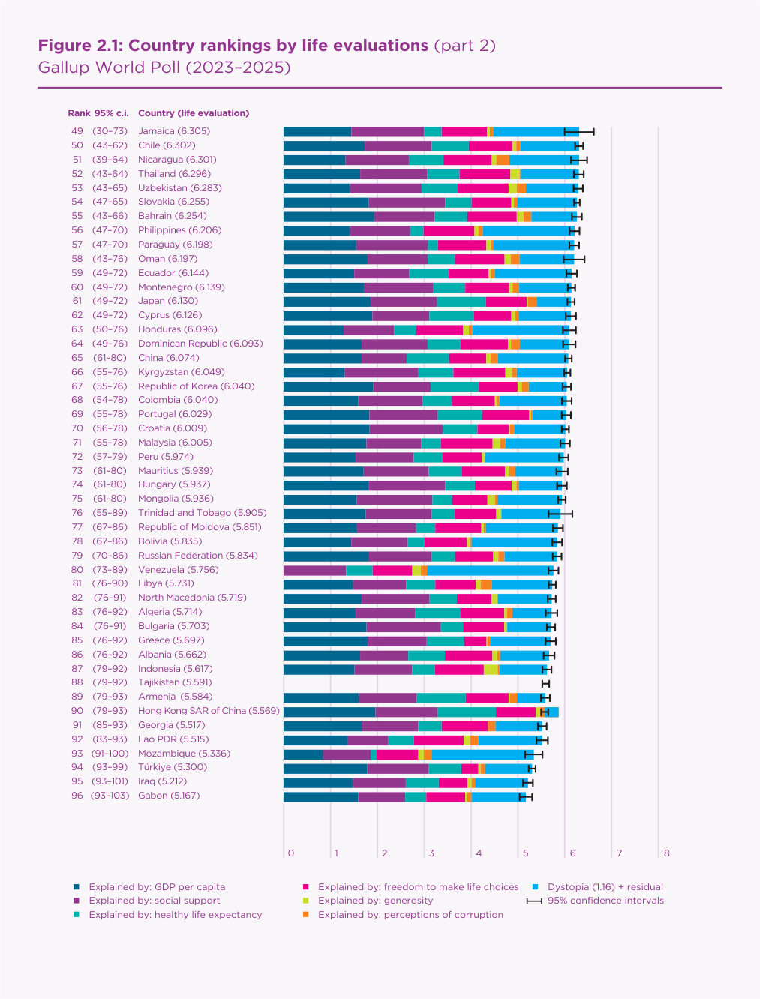
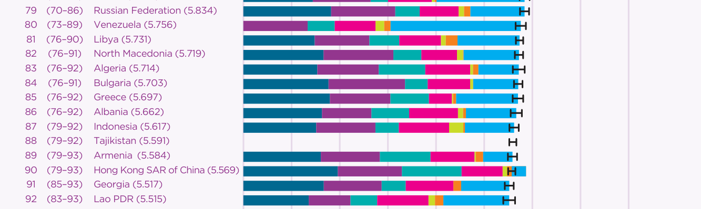
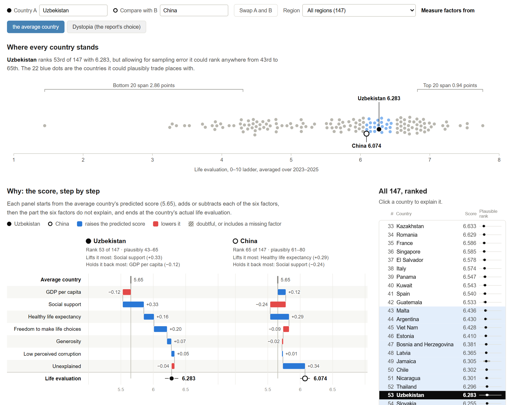
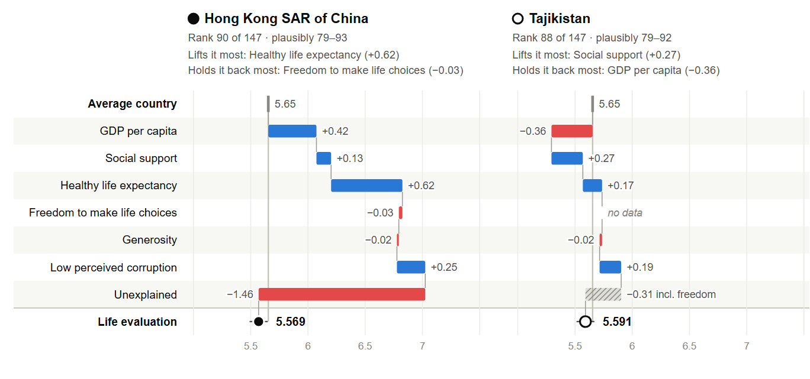
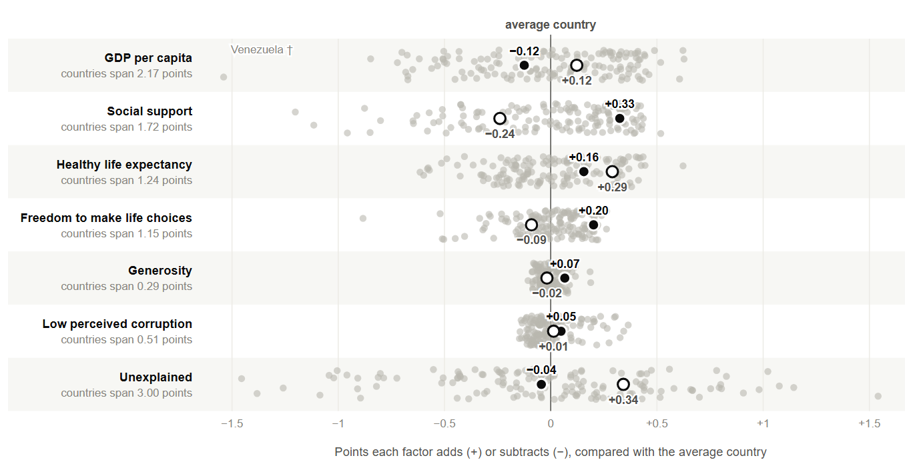

Visualization critique and redesign report
Figure 2.1 of the World Happiness Report 2026 (Helliwell et al., 2026, pp. 21–23) ranks 147 countries by their average answer to the Cantril ladder question, from 0 (worst possible life) to 10 (best), using Gallup World Poll data for 2023–2025 (Figure 1). Each country is a horizontal bar labelled with its rank, 95% rank range and score. The bar is split into seven coloured segments: six are the contributions a regression attributes to GDP per capita, social support, healthy life expectancy, freedom, generosity and perceived corruption, measured from “Dystopia”, an imaginary country with the world’s lowest value of every factor; the seventh is “Dystopia (1.16) + residual”.
The figure shows where each country stands, that the ranking is uneven (a crowded top, a long bottom tail, uncertain mid-table ranks), and that six measurable factors explain much of the gap. Its main audience is journalists, policymakers and the public looking up their own country. Readers should be able to look up a country (T1), judge whether a gap is real (T2), see the distribution (T3), compare one factor across countries (T4), read one country’s profile (T5) and find over- and under-performers (T6).

Strengths. The rows are sorted and print the exact rank, rank range and score, so lookup (T1) is precise. And every bar starts at zero on a labelled axis, so total length faithfully encodes the score.
Weaknesses.

The redesign uses the report’s own data in four linked views; clicking a country in any view selects it (Figure 3).
D1. A waterfall from the average country (W2, W3; T5, T6). A country’s pieces become steps on separate rows, running from the average country’s predicted score (5.65) to the actual score: blue where a factor raises the prediction, red where it lowers it, and the residual as the final step. A waterfall keeps the stack’s one real virtue, parts that add up to the whole, while allowing negative parts. The average country is a benchmark readers understand and, unlike Dystopia, it ignores the $89 value. Hong Kong’s factors now climb to 7.03 before the unexplained step visibly drops it to 5.57 (Figure 4). A toggle restores the report’s baseline.


D2. Strip plots on one shared scale (W1; T4, T6). Each factor gets its own axis with all 147 countries, so comparisons use aligned position. The shared scale also shows how much each factor matters: GDP spans 2.2 points, but generosity spans only 0.3 (Figure 5).
D3. Uncertainty as a group, distribution as a shape (W4; T2, T3). A beeswarm puts every score on one axis and measures the spread of the top and bottom 20; the countries inside the selected country’s rank range turn blue.
D4. Honest gaps and one navigable list (W1, W4; T1). Missing factors say “no data” and their effect becomes a hatched final step; doubtful values are hatched and footnoted. One ranked list with search and a region filter replaces the three pages, and colour encodes only direction.

Tasks the original blocked are now direct. Comparing Uzbekistan (6.28) with China (6.07) shows why one outranks the other: social support adds 0.33 for Uzbekistan and subtracts 0.24 for China. Outliers, rank uncertainty and regional comparison each take one click, and lookup is as easy as before.
The costs: only two countries are explained at a time, where the original shows all 147 at once. Waterfall steps float between panels, so their values are printed. Measuring from the average departs from the report’s numbers. The design also needs a screen, and the decomposition stays correlational, not causal.